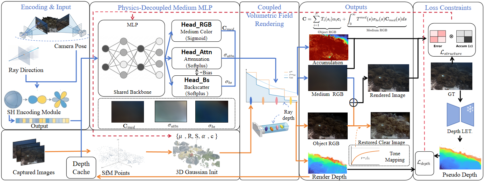

Underwater 3D reconstruction inherently suffers from the physical conflict between continuous optical media and existing discrete representation methods. Applying explicit 3D Gaussian Splatting (3DGS) to continuous water volumes inevitably introduces a representation mismatch, causing severe gradient entanglement during optimization. This forces the model to generate semi-transparent floater artifacts to compensate for medium absorption.
To resolve this at the architectural level, we propose PureSeaGS, a physics-aware and prior-driven decoupled underwater 3DGS framework. The core of our approach is the Anisotropic Medium Field (AMF), which utilizes separate prediction heads for distinct physical quantities — medium color Cmed, spectral attenuation σattn, and backscattering σbs — achieving feature-level decoupling that severs gradient interference between the continuous water volume and discrete scene geometry during backpropagation. We further introduce a depth-guided enhancement mechanism and a physics-regularized loss formulation to stabilize optimization.
Extensive experiments demonstrate that PureSeaGS effectively suppresses floater artifacts and preserves the underlying 3D geometric structure. Our method achieves state-of-the-art novel view synthesis performance, reaching a PSNR of 32.40 dB on the Curaçao dataset — a significant margin of +0.83 dB over the best existing baseline — while fully maintaining the real-time rendering efficiency of the native 3DGS rasterizer.

PureSeaGS follows a decouple-then-couple strategy. The AMF first predicts independent physical quantities via three separate heads, then the Coupled Volumetric Field renderer integrates object radiance with medium scattering following the Jaffe-McGlamery underwater image formation model.
PureSeaGS renders underwater scenes with superior quantitative performance and visual quality compared to existing methods.
Qualitative comparison on Curaçao (top) and IUI3-RedSea (bottom).
Water-free scene restoration with accurate color recovery.
By decoupling the medium from geometry, PureSeaGS produces clean depth maps without floater artifacts — a hallmark of gradient entanglement in prior methods.
Depth map comparison across scenes. PureSeaGS preserves sharp depth discontinuities while prior methods exhibit medium-induced blur and floaters.
@article{pureseags2025,
title = {PureSeaGS: Decoupled Physics-Aware 3D Gaussian Splatting
for Underwater Scene Reconstruction},
author = {LZF},
journal = {Under Review},
year = {2025},
}